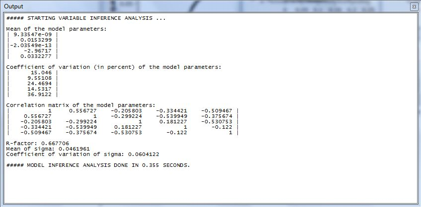
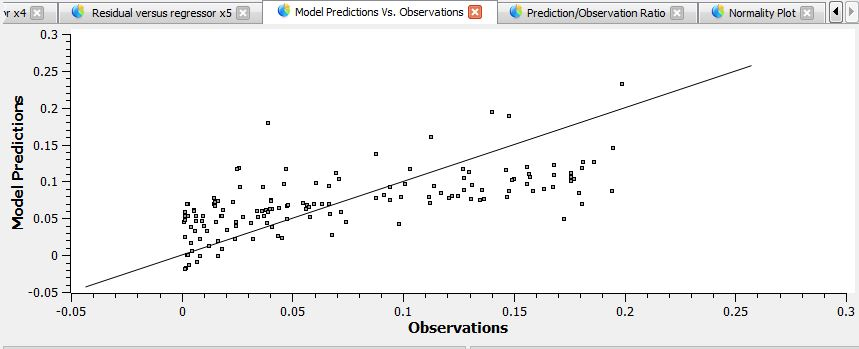
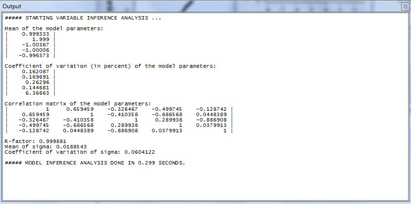
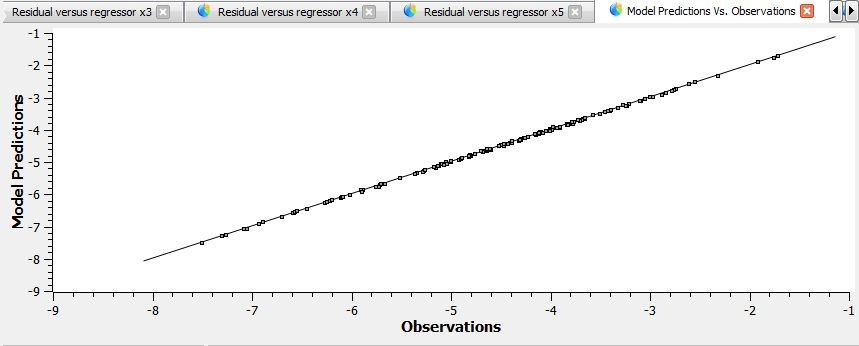

Tips and Examples
Running Time Tips
- In order to reduce the running time, Several display output features could be set as “false”, in both Models and Methods sections.
- Using “Importance Sampling” instead of ordinary sampling, by applying the mean value which is derived from FORM analyses instead of origin, decreases the number of samples which are required to obtain a similar result.
- For large sequences of calculation, one can use CMD or Terminal environment to run Rtx in background and by the usage of "nogui" in command prompt, save the time which is required to bring Rtx onto the desktop (For further details, check Programming Fundamentals).
Scripting Tips
- When dealing with a considerable number of variables and models in Rt, it is convenient to use systematic input file generation techniques such as using Excel or text editors. For this aim, one can create a sample variable in Rtx and save it as a text file, then recreate its format for more input data
- For example, Rt's input file format is explained here and one can use it to create 10 random variables with given mean and standard deviations in Excel by replacing variable name,mean and standard deviation with desired values:
RContinuousRandomVariable |ObjectName: X1 |CurrentValue: 1 |DistributionType: Normal (mean, stdv) |Mean: 1 |StandardDeviation: 1 |CoefficientOfVariation: 1 |Parameter1: 1 |Parameter2: 1 |Parameter3: 0 |Parameter4: 0 |UncertaintyType: Aleatory
Examples
Explicit Limit-State Function Example
- Consider a limit-state function
$${g(x)} = 1-\left( {{x_{2} \over 1000.x_{3} }} \right) - \left( {{x_{1} \over 200.x_{3} }} \right)^{{2}}$$
- Where X1 is a lognormal random variable with mean 500 and standard deviation 100; X2 is a lognormal random variable with mean 2000 and standard deviation 400; and X1 is a uniform random variable with mean 5 and standard deviation 0.5.
- The correlation matrix for these random variables is

- Estimate the failure probability by using Monte Carlo sampling.
- Estimate the the probability index and failure probability by Monte Carlo FORM.
- Estimate the failure probability by Importance Sampling around the design point.
- Compare and discuss the results from the previous questions.
- Identify the most and the least "important" random variable.
Solution
- As the first step, it is necessary to make sure that the three random variables are accurately defined and the correlation between them is correctly set.
- Creating and defining the random variables is done at Continuous Random Variable section. The correlations are also set at Correlation section.
- Also, the limit state function g has to be defined at Function section.
Question 1
- Running the Samling analysis with a Nataf transformer (because the variables in this example are correlated, results in a reliability index of 1.81 and a failure probability of 0.0351.
Question 2
- Running the FORM analysis with a Nataf transformer (because the variables in this example are correlated, results in a reliability index of 1.77 and a failure probability of 0.0381.
Question 3
- To run an Importance Sampling around the design point, a FORM analysis has to be done first (just like the question number 2). Then, in the Random Number Generator section, start point has to be changed to current value (which is the design point as we have just presumably completed our FORM analysis). The obtained reliability index is 1.81 and the corresponding probability of failure equals 0.035
Question 4
- Due to the non-linearity of the limit-state function, both sampling methods are more accurate compared to the FORM analysis. It should be noted that Importance Sampling method requires much less samples to get to the target coefficient of variation and therefore, is much less time consuming.
Question 5
- After running the FORM analysis, Gamma Importance Measure has to be read from the output pane. The higher the absolute value of Gamma Importance Measure is for a variable, the more important it is. If the value of a variable's importance measure is positive, then the variable is called a load variable, and a resistance variable in case it is negative. Also note that there is an Alpha Importance Measure Vector in the output pane that in case our variables are correlated (as in this example), isn't as accurate as Gamma Importance Measure.
Model Inference Example
- Consider a cantilever beam subjected to vertical load P exerted at its free end. The beam has an Elasticity Modulus of E, length of L and its moment of inertia equals I.
- Here the beam is displayed schematically:

- This beam has been subject to multiple experiments and in each of them, variables P, E, L, I, the corresponding deformation (\(\boldsymbol{\Delta}\)), as well as a constant number 1 which indicates the intercept in the model, have been recorded in a text file.
Solution
- The governing equation is initially presumed to as the following:
$${\Delta} = {\theta_1}P + {\theta_2}L + {\theta_3}E + {\theta_4}I + {\theta_5}$$
- Firstly, in order enter the set of data into Rt, go to Analysis Menu and select Model Inference so a menu similar to the picture below appears.

- The first option in the menu, offers to plot a residuals versus regressors diagram, which comes handy in assessing heteroskedasticity.
- The second option in the menu, offers to plot normality of residual diagram, to determine whether the error varriable (\(\boldsymbol{\epsilon}\)) follows a normal distribution as it should or not.
- The third option in the menu, offers to plot a model versus observations diagram, which can be an indicator of quality of the model.
- The fourth option in the menu, offers to plot ratio of model and observation.
- The fifth option in the menu, offers to search for different power combination of the powers of variables in the model, ranging from -2 to 2.
- The sixth option in the menu, offers to create random variable objects for the variables.
- The information displayed on the output pane after the inference is done are as follows:

- Although the R-factor being close to 1 is not a guarantee of accuracy of the model, in cases like this example that it is far from 1, it shows the model is not accurate enough.
- Also, a look at the model vs observations diagram could give a good insight about the accuracy of the model. As it is clear in the diagram below, current model overpredicts lower values and underpredicts the higher ones.

- Therefore, the current model does not seem to be efficient enough and there is an urge to try a new model. Creating and estimating an efficient model, is hugely dependant on having a good command of the mechanics governing our problem. Sometimes, applying Buckinghum Pi theorem might prove to be useful. Also, in case of non-linearity in the problem, repeating the regression process using natural logarithm (Ln) of the variables might come handy. In this example, the regression process has been re-done on the following parameters: Ln($ {{ \Delta \over P }} $), Ln(P), Ln (E) and Ln (I) as well as well as a constant number 1 which indicates the intercept in the model.
- After following the same procedure, the following set of results is obtained:

- It is observed that not only R-factor has inreased to a satisfying amount, but also coefficient of variation of the model parameters is now considerably lower, which indicates to a more efficient model.
- Also, the model vs observations diagram is depicted below, and this time it is showing much more satisfying outcome.
-

- Replacing the parameters with their mean values yields an approximation of the following equation:
$${\Delta} = \left( {{PL^3 \over 3EI }} \right) + {\epsilon}$$
- Which is the formula derived in the Theory of Structures.